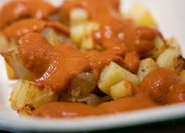

One of the most iconic tapas in Spain
This recipe is the favorite of the ANIME engineer of the trio.
A strongly flavoured dish with it's touch of spiciness.
Ingredients
- 3 potatoes
- Half an onion
- Half a spoon of both normal and spicy cayenne
- 2 spoons of flour
- Chicken broth (500ml)
- Olive Oil
Procedure
- Dice the onion and bring it to a pan
- Add olive oil and cayenne. Bring the heat to low
- Once the onion looks like it has browned a little bit, turn off the heat
- Add the flour and Chicken broth. Cook for 10min low heat. Finally blend the sauce
- Dice the potatoes and fry them at high heat
- Add sauce
- SERVE AND ENJOY
Back to top
Back to main page